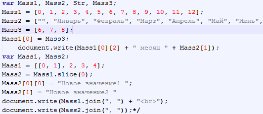

Массив —
(в некоторых языках программирования также таблица, ряд) —
набор однотипных компонентов (элементов), расположенных в
памяти непосредственно друг за другом, доступ к которым
осуществляется по индексу (индексам). В отличие от списка,
массив является структурой с произвольным доступом[1].
Размерность массива — количество индексов, необходимое для однозначного
доступа к элементу массива[2][3].
Форма или структура массива — количество размерностей и размер
(протяжённость) массива для каждой размерности[4], может быть
представлен
одномерным массивом[5].
В языке программирования APL массив является основным типом
данных (при
этом нуль-мерный массив называется скаляром, одномерный —
вектором,
двумерный — матрицей)[5].
В ряде языков программирования, например, Лисп, JavaScript,
PHP, Ruby
применяются также ассоциативные массивы (или хэш-массивы), в
которых
элементы не обязательно являются однотипными, а доступ к ним
не
обязательно осуществляется по индексу.
